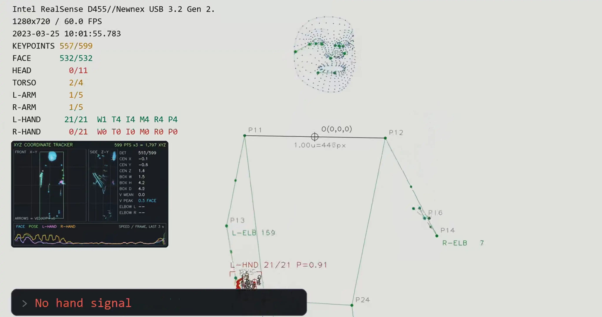
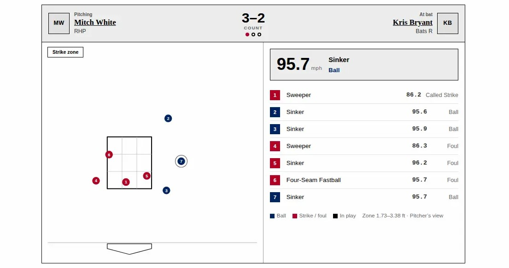

Here are some of the things I’ve worked on.
Untitled
Aug 2022 – Dec 2025

A sign language recognition app that turns hand gestures into real-time text.
It’s an embedded system project. Ownership has since been transferred.
Hidden Ball
Apr 2021 – Jan 2022

Hidden Ball is an MLB archive, from 1980 to today.
It checks and pulls data every 100 seconds (every 3 seconds while a game is live) to keep things up to date. It was primarily built to test an ETL workflow, as a fan project.
Pluk
Late 2021
%202021-11-13.webp)
Pluk is a Linux tray program that grabs text from anywhere on your screen.
Every capture is saved to a local SQLite history, sorted by time and date. The default capture shortcut is Ctrl+Shift+P and can be changed in Pluk’s settings. On GNOME, Pluk registers the shortcut with the desktop itself, so capture works even when the tray app is closed.
GPL-3.0 licensed, version 1.13.0. Available on Debian-based distros (Ubuntu, Linux Mint) and Red Hat-based distros (Fedora, Nobara (unstable)).
curl -fsSL https://ocaif.pages.dev/pluk | bash